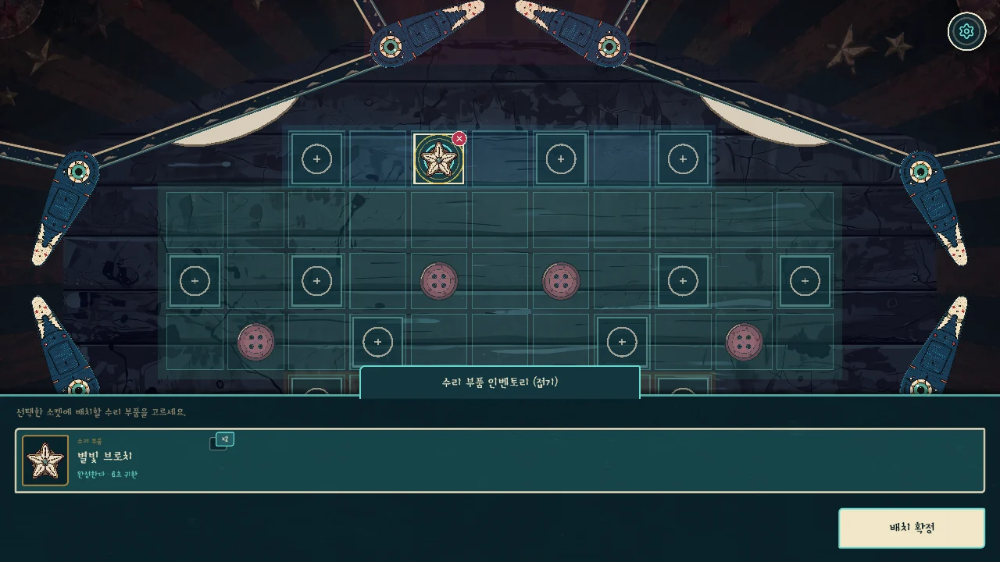
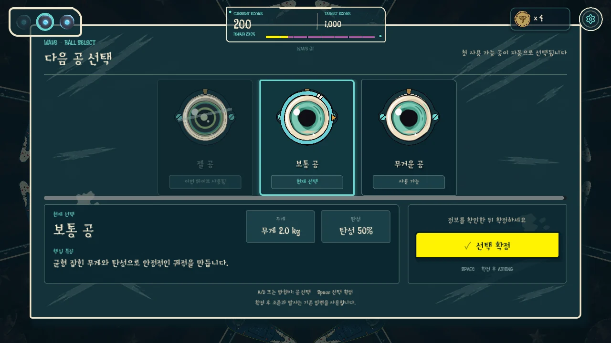
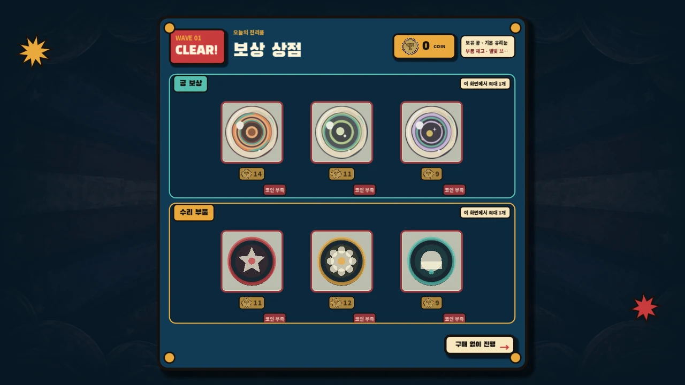
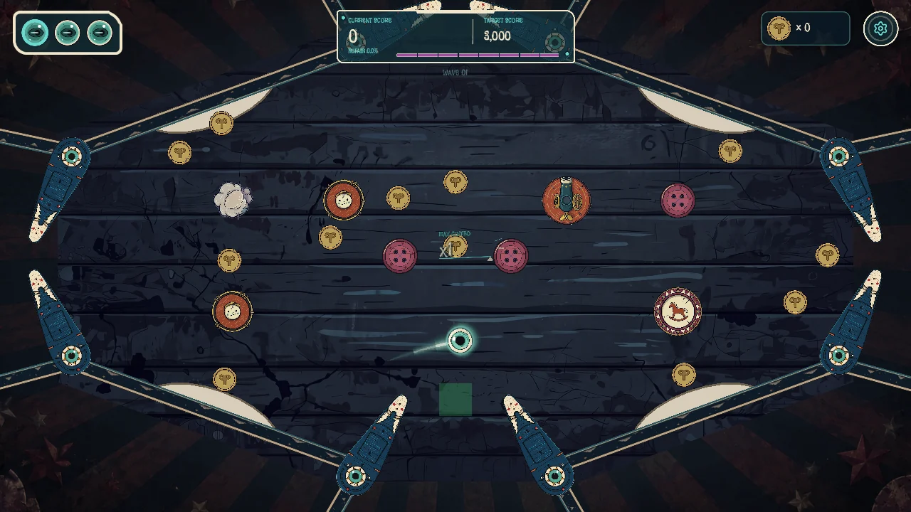
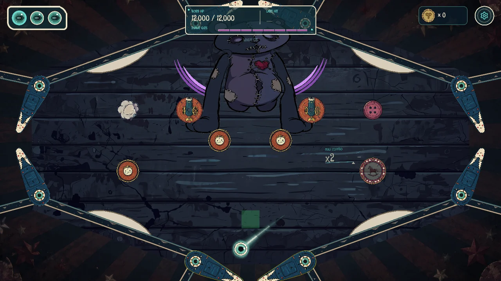
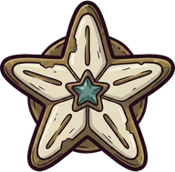
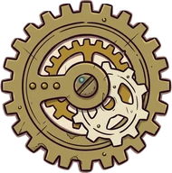
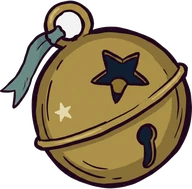
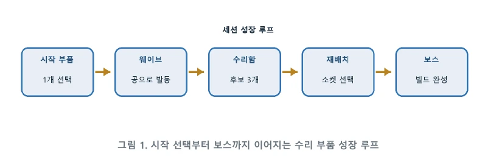

NHN Game x AI 해커톤 공모전
DOLL EYE
PINBALL
인형의 유리눈을 공처럼 튕겨 저주받은 장난감을 수리하는 핀볼 로그라이트입니다. 저는 공을 살리는 사이에도 다음에 노릴 곳을 고를 수 있도록, 보드에 끼우는 수리부품과 웨이브별 배치를 설계했습니다.
한 판의 흐름
핀볼판에 부품을 직접 놓고, 공이 어디로 튈지 예상하며 플리퍼를 고릅니다. 일반 웨이브 세 번을 거쳐 마지막에는 곰 인형을 수리합니다.

빈 소켓을 골라 브로치를 장착합니다. 단추 근처에 놓을지, 플리퍼에서 바로 노리기 좋은 곳에 놓을지 직접 정합니다.

공마다 무게와 탄성이 다릅니다. 발사 후에는 보드 가장자리의 플리퍼로 공을 살리며 단추와 수리부품을 차례로 노립니다.

목표 점수를 채우면 보상 상점이 열립니다. 모은 코인으로 공이나 수리부품을 사거나, 코인을 아껴 다음 보드로 넘어갈 수 있습니다.
단추에서 대포로, 마지막에는 보스로
첫 보드에서는 단추의 반사각을 익히고, 다음 보드에서는 용수철이 공을 얼마나 밀어내는지 배웁니다. 뒤로 갈수록 때릴 표적과 공을 보낼 방향을 함께 고르게 했습니다.

장난감 북은 공을 빠르게 되돌려 보내고, 태엽 대포는 공을 받아 다시 쏩니다. 익숙한 단추 사이에 새 장치를 두어 같은 플리퍼로도 다른 경로를 노릴 수 있습니다.

범퍼를 맞혀 점수를 쌓던 보드에 곰 인형이 들어섭니다. 팔에 맞으면 공의 궤적이 달라져서, 인형을 노리면서도 돌아올 공을 받을 플리퍼를 살펴야 합니다.
SYSTEM DESIGN
공이 닿으면 깨어나는 수리부품
팀원이 제안한 네 가지 수리 도구를 플레이어의 행동으로 풀었습니다. 톱니는 같은 곳에 여러 번, 방울은 여러 곳에 잇달아 공을 맞히도록 유도합니다. 플레이어는 웨이브를 시작하기 전에 자기가 노리기 좋은 위치에 부품을 놓습니다.
웹 빌드에 담긴 세 가지 부품

별빛 브로치- 브로치에서 출발해 서로 다른 범퍼 두 개를 맞히고 되돌아오면 수리가 완성됩니다.

황금 톱니바퀴- 짧은 시간에 세 번 맞히면 감아 둔 태엽이 풀리듯 공이 더 빨라집니다.

잊혀진 별방울- 방울을 친 뒤 쌓은 콤보에 따라, 잠시 뒤 방울의 여운이 추가 콤보로 돌아옵니다.
초안에는 다른 부품까지 실을 이어 콤보를 만드는 ‘초승달 바늘’도 설계했습니다.

LEVEL DESIGN
첫 웨이브에서도 완성할 수 있도록
별빛 브로치의 초안은 서로 다른 수리부품 두 종류를 거쳐 돌아오는 규칙이었습니다. 그런데 첫 웨이브에는 단추 범퍼만 있어 브로치를 골라도 보상을 받을 길이 없었습니다.
제출 버전에서는 같은 종류라도 위치가 다른 범퍼 두 개를 맞히면 되도록 조건을 바꿨습니다. 모서리의 반원 벽은 횟수에서 뺐습니다. 이제 첫 웨이브에서도 두 단추 사이의 경로를 노릴 수 있고, 같은 단추를 두 번 맞히면 진행도는 한 칸만 찹니다.
시간 제한 없이 타격 순서 체험
두 단추를 거쳐 브로치로 돌아오기
브로치를 눌러 수리를 시작하세요.
PRODUCTION
프로토타입에서 웹 제출까지
팀의 결정을 어디서 찾을까
PM으로 일정과 Jira 이슈를 관리했습니다. 7월 24일에는 흩어진 기획과 제작 기준을 다시 찾기 쉽도록 팀 위키의 구조를 제안했습니다. 기존 기록을 살리면서 기획, 아트·사운드, 회의록을 나누고, 합의한 결정과 마감 기준을 따로 모으는 방식에 팀원들이 동의했습니다.
남은 열흘의 작업 순서
7월 30일 회의에서 팀은 기능 하나마다 코드와 아트, 시각 효과를 함께 작업하기로 했습니다. 제가 남긴 회의록의 첫 순서는 플리퍼와 공이었습니다. 조작과 공의 움직임을 먼저 확인하고, 그다음에 보드와 범퍼, 보상을 붙이는 순서였습니다.
3주간 시험한 프로토타입을 바탕으로 팀과 콘셉트를 다시 정했습니다. 저는 부품을 놓을 자리와 웨이브 밸런스를 직접 플레이하며 조정하고, 핀볼판과 보스의 시각·음향 연출을 제작·검수했습니다. 팀은 마지막 열흘 동안 웹 빌드와 제출 자료를 마무리했습니다.
제출일에 세 명에게서 들은 피드백
8월 10일에는 플레이어 세 명의 의견을 모았습니다. 점수를 높여야 하는지 보스를 잡아야 하는지 헷갈렸다는 사람도 있었고, 수리부품이 일회용인지 궁금해한 사람도 있었습니다. 상단 UI가 보스를 가린다는 지적도 있었습니다.
저는 피드백을 공·부품·목표·점수로 나누어 팀에 공유했습니다. 특히 부품 설명은 플레이어가 실제로 어떤 표적을 어떤 순서로 맞혀야 하는지부터 쓰자고 제안했습니다.